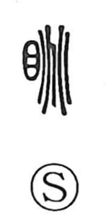

眺

Uncategorized
Kun: nagameru, nagame | On: chou
to gaze ・ to look out ・ watch ・ prospect
Explanation
眺 is a phono-semantic character: 目 (eye) supplies the sense, and 兆 gives the sound chō. The graph 兆 originally depicts the irregular fissure traced on a tortoise plastron during divination, a spreading crack of unpredictable shape. Early glosses link this to ‘improper eyes’—the act of winking or casting one’s eyes askew—which then broadened into letting one’s gaze drift off, looking out into the distance. From there 眺 came to mean to look far and to look ahead expectantly, as seen in compounds like 眺矚 and 眺望. In Japanese, nagameru and the noun nagame evoke an idle, absent-minded gaze or the broad view before one.